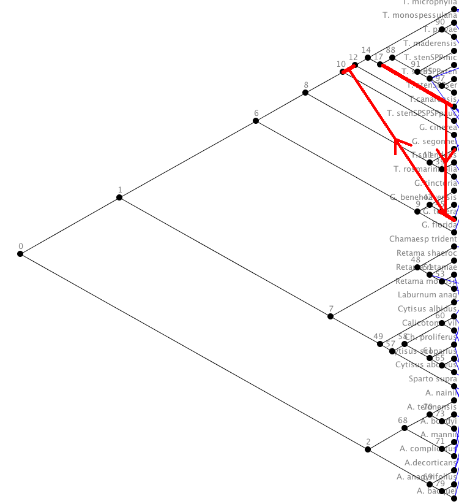

Tarzan is an important software package for the cophylogeny reconstruction problem. It is very fast and generally finds very good solutions. Since Tarzan and Jane generally produce different solutions, the practioner may wish to use both tools simultaneously.
It is important to note that
Tarzan sometimes finds solutions that contain
timing incompatabilties that render its solutions incorrect. Here we
demonstrate one such case.
This is a tree on which Tarzan's solutions contain timing incompatibilities. Download the tree file .
Use the following set of costs:

Select the first cost-minimal reconstruction

Here is the solution

These three associations should appear in the solution
(186,T.canarensis,2)
(188,G. tenera,2)
(202,12,1)
186, 188, 202 are a direct chain of parent-child vertices.
Here is that series of associations mapped onto the host tree as
host switches.

This host switch causes a parasite's descendant to land on the ancestor of the host on which it is mapped. This is clearly incorrect.
All of the 100 solutions reported by Tarzan for this problem instance are incorrect due to such timing incompatibilities.